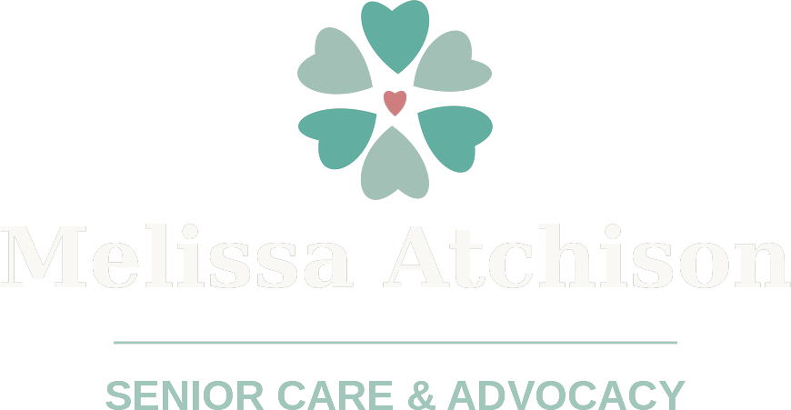
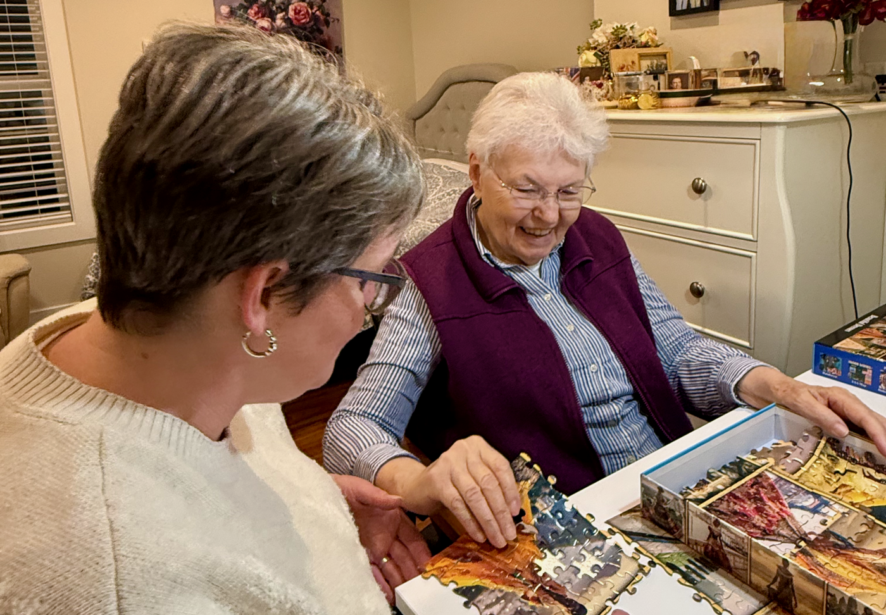

I help seniors age at home with dignity, and help families make sense of the medical system along the way.
Home care agencies limit what caregivers are allowed to do, and geriatric care managers usually stick to advocacy and coordination without doing any hands-on care. I do both myself.
Owner & Caregiver
I've spent my career as a caregiver, advocate, and concierge caregiver for seniors who want to age in their own homes. I've helped families through difficult diagnoses, translated doctor jargon into plain language, and helped people understand their rights as patients, all while still showing up for the hands-on, day-to-day care that makes independence possible.
Working independently means there are no restrictions on the kind of care I can provide, so I'm free to meet a person's needs fully, not just the parts that fit inside an agency's liability. I treat every client the way I'd want my own family treated: with kindness, compassion, empathy, patience, and respect for their independence, encouraging them to do what they can on their own and stepping in exactly when and where it's needed. On the hard days, I lean on an old saying that's stuck with me: if you don't use it, you'll lose it. Trust and reliability matter more than almost anything in this field, and one of the simplest ways I earn them is by showing up on time, ready to work, and communicating clearly every step of the way.

Presence matters as much as tasks — care built on real relationships, not a checklist.
In loving memory of Nana — hummingbirds are believed to carry a spirit home, and roses will always remind me of her.
No two families need exactly the same thing, so we'll build a personalized care plan around what matters most to you and your loved one.
Personal, day-to-day support for seniors aging in place, at any stage.
Help understanding and navigating the medical system.
Comfort, presence, and guidance for patients and families.
This is really what sets things apart. One person handling both sides of your care.
No rotating staff and no separate advocate to loop in. The same person who knows your situation is the one giving the hands-on care.
Licensed as a Home Care Aide with nurse delegation certification, plus years of hands-on experience with complex medical navigation and end-of-life care.
Private-pay and independent, so your care gets shaped around what you actually need instead of agency policy.
Send an email or give me a call and tell me what's going on.
We'll talk about your situation and what you're hoping for.
I'll put together a plan combining whatever mix of care and advocacy makes sense.
We begin, on whatever schedule actually works for you.
Reach out for a no-pressure conversation about your situation. There's no issue too complicated, and nothing too small to ask about.
Email: melissa@melissaatchison.com
Phone: (206) 395-8441
Email MelissaLICENSED · BONDED · INSURED
Serving clients throughout the Puget Sound region, Washington State.